How the exam works
- Four exercises of 4–6 sub-questions, calculator allowed, the course formula sheet is handed out (no personal sheet). Constants given:
 ,
, 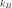
, ,
, 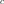
. - The papers are almost identical from one session to the next: only the numbers change. Learn the eight methods below and rehearse each with every variant until it takes < 10 minutes.
- Marks are lost on units (ps/(nm km), dB vs linear, µm vs m), on the half-angle vs full-angle divergence, and on "comment" questions left blank. Always end a numeric answer with one sentence of physics ("thermal noise dominates, use a TIA").
- Formulas you must know because they are not on the sheet: ;
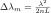
;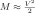
for a step-index fibre (the sheet's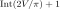
is the planar guide);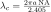
;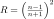
;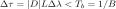
; ;
; 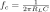
; the dB rule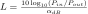
.
Type A — photodiode: QE, NEP, dark current, thermal noise
Asked in every paper. Data: responsivity
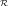
, NEP, dark current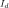
, bandwidth ,
,  Ω.
Ω.
- External QE:
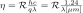
. - Minimum power for SNR = 1: NEP is given per
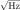
, so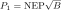
. - Minimum power set by the dark current: the dark current's shot noise
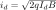
must be matched by the signal photocurrent, . Mention also the cruder estimate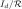
(photocurrent equal to the dark current): it gives the same order of magnitude. - Thermal noise of the load: , equivalent optical power
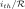
. - Conclusion:
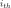
is two orders of magnitude above the dark-current noise, so a 500 Ω load wastes the detector; the receiver is thermal-noise limited. Remedies: a transimpedance amplifier (large feedback resistance, same bandwidth), an APD (gain before the thermal noise), or an optical preamplifier (noise, photodiodes).
| paper | λ (nm) | η | P1 (nW) | i_d (nA) | P_d (nW) | i_th (µA) |
|---|---|---|---|---|---|---|
| Feb 2022 | 1550 | 0.760 | 0.266 | 3.58 | 3.77 | 0.576 |
| Jun 2024 | 1550 | 0.760 | 0.212 | 2.83 | 2.98 | 0.407 |
| Feb 24, Jun 25 | 1310 | 0.899 | 0.266 | 2.53 | 2.66 | 0.576 |
Data:  A/W everywhere; NEP
A/W everywhere; NEP  W/√Hz (
W/√Hz (
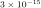
in June 2024);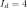
, 5, 2 nA;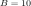
GHz (5 GHz in June 2024). The equivalent thermal-noise power is 0.61, 0.43 and 0.61 µW: over 2000 times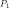
. Check of 1 for Feb 2022: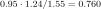
.Type B — link budget: SNR, loss, dispersion, compensation
"A communication system uses the previous receiver …".
- SNR: the course uses the optical-power ratio
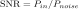
with (or the given noise level), and quotes it also in dB: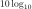
. Remark for full marks: the electrical SNR is the square of this ratio, because the photocurrent is linear in power. - Fibre length from the loss:
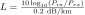
; 1 mW → 1 µW is 30 dB → 150 km; 1 mW → 10 µW is 20 dB → 100 km. - Does it work? Chromatic spread
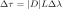
against the bit slot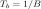
. The course criterion is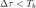
(stricter rules use or ; state the one you use).
; state the one you use). - How to fix it: a narrower source (DFB laser, external modulation instead of direct modulation, which also removes chirp), a compensating fibre of opposite
 or a chirped fibre Bragg grating, operation near the 1310 nm zero-dispersion window, or electronic/coherent DSP.
or a chirped fibre Bragg grating, operation near the 1310 nm zero-dispersion window, or electronic/coherent DSP. - Compensating fibre: the accumulated dispersion must satisfy
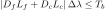
, i.e.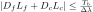
. With ,
,  ps/(nm km) this is a window of lengths:
ps/(nm km) this is a window of lengths: 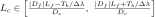
, with full compensation in the middle at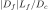
. The minimum length is the lower end. - Repeat at higher rate: recompute
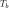
and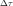
with the new linewidth.
| paper | rate, Δλ (nm) | L (km) | Δτ (ps) | T_b (ps) | works? | L_c (km) |
|---|---|---|---|---|---|---|
| Feb 2022 | 2.5 Gb/s, 0.2 | 150 | 540 | 400 | no | 7–47 |
| Feb 2022 | 10 Gb/s, 0.02 | 150 | 54 | 100 | yes | none |
| Jun 2024 | 5 Gb/s, 0.4 | 150 | 1080 | 200 | no | 22–32 |
| Jun 2024 | 50 Gb/s, 0.01 | 150 | 27 | 20 | no | 7–47 |
| Jan 2024 | 2.5 Gb/s, 0.5 | 100 | 900 | 400 | no | 10–26 |
| Jan 2024 | 10 Gb/s, 0.025 | 100 | 45 | 100 | yes | none |
SNR at 1 µW: Feb 2022
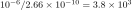
(35.8 dB); June 2024 (36.7 dB). January 2024 (10 µW over 20 nW of noise): 500 (27.0 dB).Trap in the official correction (January 2024): it gives
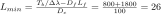
km, which is the upper end of the window (the link over-compensated to +800 ps/nm). The shortest compensating fibre is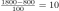
km; 18 km cancels the dispersion exactly. Write the window: it contains the examiner's number and shows you understood the sign.Trap at 50 Gb/s (June 2024):
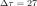
ps exceeds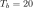
ps, so the system does not work even with a 0.01 nm laser. Moreover a 50 Gb/s signal has a modulation spectrum of ≈ 50 GHz ≈ 0.4 nm at 1550 nm, much wider than 0.01 nm: the real spread is set by the modulation, which is why high-rate links use coherent detection with DSP compensation.
Related: the effective dispersion of a spliced link is  ; January 2024, Exercise 2:
; January 2024, Exercise 2:
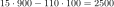
ps/nm over 1000 km →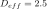
ps/(nm km) (fibre dispersion).Type C — step-index fibre
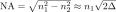
, with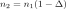
when is given.
is given. with the radius
with the radius  (the paper gives the diameter).
(the paper gives the diameter).- Single mode for
 : .
: . - Acceptance:
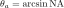
(from air); the full cone is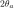
. Quote both. - Multimode only:
 ; intermodal spread
; intermodal spread 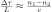
; bit-rate × distance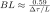
in the course's (Kasap's) convention for Gaussian pulses, or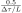
with the simple half-slot rule.
Single-mode fibre (Feb 2022, June 2024): µm, , → , , , , µm, (cone ). Comment worth the honours: at 1310 nm  is just above 2.405, so on paper LP
is just above 2.405, so on paper LP is guided too; in a real cabled fibre the LP mode is so weakly confined that bends strip it within metres, which is why this fibre (it is Corning SMF-28) is specified single-mode down to ≈ 1260 nm. The MFD (Marcuse) is 8.9 µm at 1310 nm and 10.1 µm at 1550 nm (fibres).
is guided too; in a real cabled fibre the LP mode is so weakly confined that bends strip it within metres, which is why this fibre (it is Corning SMF-28) is specified single-mode down to ≈ 1260 nm. The MFD (Marcuse) is 8.9 µm at 1310 nm and 10.1 µm at 1550 nm (fibres).
Types of dispersion (the theory sub-question, answer in four lines): intermodal (different modes, different group delays; multimode only, cured by graded index); chromatic = material ( , silica's ) + waveguide (
, silica's ) + waveguide ( , the mode's confinement depends on
, the mode's confinement depends on  ), cancelling near 1310 nm in standard fibre, shifted in DSF; polarisation-mode dispersion (random birefringence, grows as ); profile dispersion ( depends on ), minor.
), cancelling near 1310 nm in standard fibre, shifted in DSF; polarisation-mode dispersion (random birefringence, grows as ); profile dispersion ( depends on ), minor.
Multimode fibre (January 2024, official correction): µm, , , 850 nm: , , µm (beyond it the fibre would be single mode), , (cone ), ns/km, Mb/s·km. The correction prints "0.0088 GHz": the unit is GHz·km.
Type D — Fabry–Perot laser diode and coupling to a fibre
Data: , spectral width  , cavity
, cavity  , .
, .
- .
- Mode spacing , .
- Mirror reflectance from the width: the sheet gives and
 , so and, with , solve :
, so and, with , solve :  .
. - How to obtain it: a cleaved facet gives Fresnel for ; a lower
 needs an anti-reflection coating (single quarter-wave layer , ideal ); a higher a dielectric quarter-wave stack (Bragg mirror) or a DBR/DFB grating.
needs an anti-reflection coating (single quarter-wave layer , ideal ); a higher a dielectric quarter-wave stack (Bragg mirror) or a DBR/DFB grating. - Gaussian output with full divergence : rad, .
- Fibre with MFD 9 µm: the beam must not grow beyond the fibre mode, µm, so ; in the far field this is just µm, independent of . Comment: the chip must sit ≈ 15 µm from a cleaved fibre, which is impractical; real packages use a lensed fibre or a ball lens to match the mode sizes (Gaussian beams).
| paper | λ | δν, L | δλ (nm) | Δν_m (GHz) | Δλ_m (nm) | F | R |
|---|---|---|---|---|---|---|---|
| Feb 2022 | 850 | 250, 500 | 0.603 | 93.7 | 0.226 | 0.375 | 0.014 |
| Jun 2024 | 850 | 50, 800 | 0.121 | 58.6 | 0.141 | 1.17 | 0.110 |
| Feb 24, Jun 25 | 908 | 50, 400 | 0.138 | 117 | 0.322 | 2.34 | 0.284 |
δν in GHz, in µm, . Waist: µm at 850 nm, 1.10 µm at 908 nm ( µm); fibre distance µm in all papers.
Interpretation that earns the honours: in the 908 nm paper is just the bare cleaved facet. In February 2022 the "spectral width" 250 GHz is wider than the mode spacing (93.7 GHz), so : a resonator with has no resolved modes, and the width is really the multimode envelope of the gain, not one mode's linewidth. Do the computation as asked (, an AR-coated facet, as in a superluminescent diode), then say this in one sentence.
Type E — double-heterostructure laser threshold
February 2024 and June 2025: InGaAsP DH laser, 1310 nm,  µm, µm,
µm, µm,  µm, , cm,
µm, , cm,  m³/s, .
m³/s, .
- Cleaved facets: . cm.
- Read the InGaAsP (1300 nm) curve of peak gain vs carrier density at 131 cm (log axis: between and , about a third of the decade): cm
 . Draw the horizontal line on the graph and state your reading.
. Draw the horizontal line on the graph and state your reading. - Radiative lifetime at strong injection ns; A/m² A/cm².
- mA.
Sensitivity: , so reading 1.4 or 1.6 × 10¹⁸ gives 3.1–4.1 mA; any value in this range with the method shown is full marks. Remark: real devices have and non-radiative recombination, both raising (laser diodes).
Type F — photodiode receiver with an RC front end
February 2024 and June 2025: InGaAs pin, kΩ, pF,  nA, 25 nW at 1550 nm, A/W, 300 K.
nA, 25 nW at 1550 nm, A/W, 300 K.
- kHz; use it as the noise bandwidth .
- nA.
- Shot noise pA.
- Thermal noise pA; total pA.
- (32.4 dB).
Comment: thermal noise dominates by ≈ 10×; a larger lowers it as but also lowers the bandwidth as : the transimpedance amplifier breaks this trade-off.
Type G — cavities: He–Ne and InGaAsP (January 2024, official correction)
He–Ne, m, , 633 nm:
- MHz, nm; ; nm ( MHz). That is the passive-cavity width; the real laser line is even narrower, but the Doppler gain width (≈ 1.5 GHz) holds several modes.
- mm: mrad (0.231°), mm; spot diameter mm at 1 m and 80.6 mm at 10 m (far field: linear growth).
InGaAsP FP laser,  µm, nm, , gain bandwidth 2 nm:
µm, nm, , gain bandwidth 2 nm:
- ; GHz, nm; modes inside 2 nm: , so 1 or 2 depending on where the comb sits.
- Uncoated facet .
- Coating for a reflection peak at 1540 nm: quarter-wave stack, each layer thick, period nm for (first-order Bragg condition ).
- Linewidth:
 : , pm, GHz; : , pm, GHz.
: , pm, GHz; : , pm, GHz.
Trap in the official correction: it also prints 6.5 THz for , which is . The linewidth is GHz, consistent with 43 pm (); always cross-check frequency against wavelength.
Type H — bandgap and photon counting (January 2024)
- Sensitive to 600 nm: eV.
- Area cm² under 5 mW/cm²: mW; pairs per second s.
- GaAs, eV: µm nm, near infrared, not visible.
- Si detects it: µm > 873 nm, so ; Si is indirect, so absorption is weaker ( cm at 870 nm) and the absorption region must be tens of µm thick (semiconductor optics).
Theory questions to have ready
Each in three or four lines, with one formula and one number.
- Why a pin instead of a pn photodiode: absorption in the depleted i-layer, drift instead of diffusion → speed and efficiency; smaller capacitance.
- APD vs pin: internal gain
 beats thermal noise; price: excess noise
beats thermal noise; price: excess noise  , high bias, temperature sensitivity.
, high bias, temperature sensitivity. - Why DH lasers: carrier confinement (band offset) and optical confinement (higher index) in the same thin layer →
 from ~10⁵ to ~10² A/cm².
from ~10⁵ to ~10² A/cm². - LED vs laser: spontaneous vs stimulated emission; width
 (tens of nm) vs < 1 nm; incoherent vs coherent; no threshold vs threshold (LEDs).
(tens of nm) vs < 1 nm; incoherent vs coherent; no threshold vs threshold (LEDs). - Single-mode lasers: DFB, DBR, VCSEL, external cavity.
- 1310 vs 1550 nm: zero dispersion vs minimum loss (0.2 dB/km) and EDFA band (amplifiers).
- Evanescent wave under total internal reflection: penetration depth
 , basis of cladding modes and directional couplers.
, basis of cladding modes and directional couplers.
Pitfall
The most expensive mistakes in these papers are (1) using the diameter instead of the radius in ; (2) taking as the half-angle (doubles  ); (3) forgetting that NEP is per ; (4) mixing nm and m in ; (5) answering "the minimum compensating length" with the upper end of the window.
); (3) forgetting that NEP is per ; (4) mixing nm and m in ; (5) answering "the minimum compensating length" with the upper end of the window.